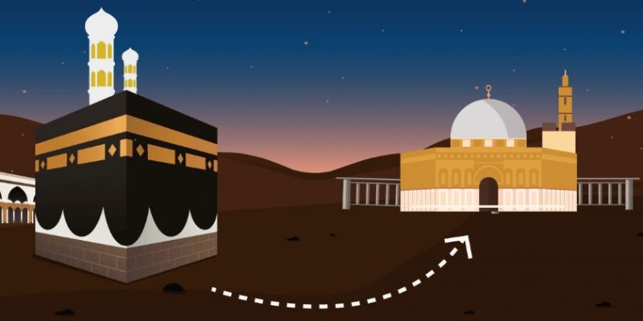

Menggapai Hikmah Isra Mikraj
Jumat, 27 Februari 2015 00:20Jumat, 15 Mei 2015 00:11
Oleh: KH Husin Naparin
SAAT ini bulan Rajab, umat Islam ramai memperingati peristiwa Isra dan Mikraj yang terjadi pada tahun ke-11, setelah Nabi Muhammad saw diangkat menjadi Rasul. Sering dikisahkan oleh ulama, bahwa melalui Isra dan Mikraj Rasulullah bertamasya ke luar angkasa, hingga langit ke- 7 dan bertemu Allah swt di Sidratil Muntaha untuk menerima perintah salat lima waktu. (Ahmad Barjie B, BPost, Rabu 6 Mei 2015).
Sebagai penceramah, penulis sering bertanya kepada panitia pengundang, apa tema peringatan. Ada yang menjawab, tasarah pian aja (terserah kamu saja). Mereka ini kebanyakan tidak berpendidikan tinggi. Apalagi bila ditanya apa tujuan memperingati Isra dan Mikraj, mereka tidak bisa menjawab.
Mereka merasa peringatan Isra dan Mikraj harus diadakan; bila tidak, beragama Islam dianggap belum sempurna. Peringatan Isra dan Mikraj diadakan sebagai sarana dakwah islamiyah, siar Islam dan silaturahmi antarsesama umat Islam setempat, minimal sarana untuk mengingatkan umat.
Allah swt berfirman: fadzakkir fa-innadz-dzikra tanfa’ul-mu’minin, artinya: “dan tetaplah memberi peringatan, karena sesungguhnya peringatan itu bermanfaat bagi orang-orang yang beriman.”(QS Adz-Dzariat ayat 55). Kendati demikian, ada yang berpendapat bid’ah dan pemborosan, karena tidak pernah dilakukan oleh baginda Rasul.
Ada beberapa tema peringatan yang menarik, antara lain, “Dengan hikmah peringatan Isra dan Mikraj mari kita tingkatkan silaturrahmi;” ternyata masyarakat di daerah itu kurang harmonis.
Ada pula tema, “Dengan hikmah peringatan Isra dan Mikraj, makmurkan masjid dan tingkatkan salat berjemaah;” ternyata di daerah itu masjidnya indah dan megah, tetapi minim jemaah, bahkan di situ ada ajaran sempalan; berisikan bahwa seorang muslim apabila sudah sampai pada martabat tertentu, salat bebas (tidak lagi dituntut salat). Cukup menarik pula tema, “Menangkap, menghayati, dan mengamalkan hikmah Isra dan Mikraj dalam kehidupan nyata sehari-hari.”
Puncak Isra dan Mikraj ada dua, pertama Allah swt memperlihatkan sebagian tanda-tanda (kebesaran) kepada Nabi Muhammad saw (QS Al-Isra’ ayat 1) dan beliau benar-benar telah melihat sebagian tanda-tanda (kekuasan) Tuhannya yang paling besar itu. (QS An-Najm ayat 18).
Kedua, Allah swt memerintahkan salat fardhu lima waktu. Salat berbeda dengan puasa dan zakat yang diperintahkan pada tahun ke-2 H dan haji pada tahun ke-6 H; cukup melalui Jibril di permukaan bumi. Dengan demikian, bila kita mau menangkap, menghayati, dan mengamalkan hikmah Isra dan Mikraj dalam kehidupan nyata sehari-hari, tiada lain adalah “menegakkan salat fardhu lima waktu secara purna.”
Fakta dan data berbicara berapa banyak umat Islam yang tidak mendirikan salat fardhu. Ada pula yang melaksanakan salat, tetapi tidak tepat waktu. Atau mendirikan seadanya, tidak ada keseriusan sehingga belum membuahkan keberuntungan. Salat seperti ini adalah salat yang kehilangan khusyu’, menurut istilah Abu Sangkan. Atau barangkali boleh dikatakan, bukan khusyu’nya yang hilang tetapi seseorang belum menemukan khusyu’, sehingga salatnya belum mampu mencegah perbuatan keji dan munkar.
Ada tiga prinsip Rasulullah saw dalam mendirikan salat fardhu, yaitu di awal waktu, berjemaah dan di rumah Allah (masjid). Nabi saw bersabda, “Amalan manusia yang pertama kali dihisab (perhitungkan) oleh Allah swt pada hari kiamat nanti adalah salatnya. Jika salat baik, maka baiklah seluruh amalnya. Dan jika salatnya rusak, maka rusaklah semua amalannya.” (HR Tabrani). Menjelang wafatnya, beliau berwasiat agar umatnya selalu menjaga salat, katanya “Jagalah salat, salat.” (HR. Ibnu Jabir dan Ummu Salamah).
Peristiwa Isra dan Mikraj sangat erat hubungannya dengan salat. Panggilan Isra dan Mikraj itu seolah-olah sebagai panggilan Allah swt kepada Rasulullah saw untuk menerima dan melaksanakan salat sebagai hadiah Allah kepada Rasulullah ketika beliau menghadap-Nya.
Oleh karena itu, peringatan Isra dan Mikraj dapat diartikan sebagai peringatan perintah salat. (Ensiklopedia Pengetahuan Al-Quran dan Hadits, Tim Baitul Kilmah, Kamil Pustaka,Jakarta, 2014, jilid 2, hal. 249).